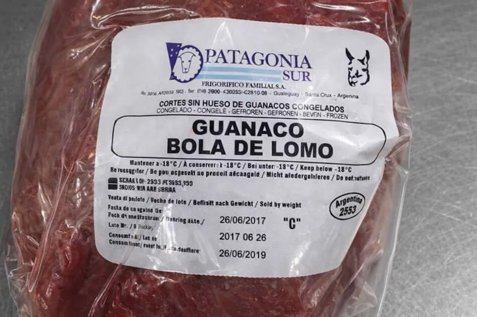
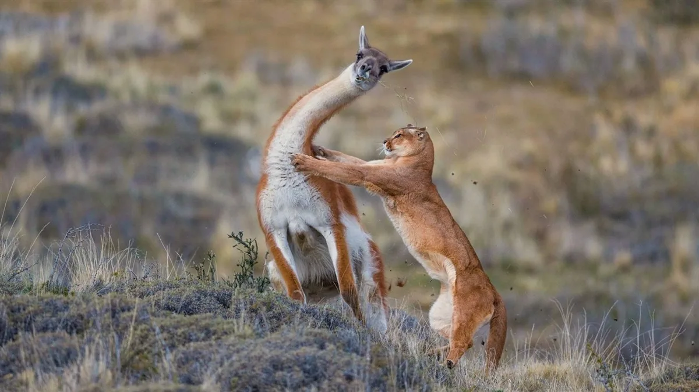

CARNE DE GUANACO
sin censos, insuficientes controles y con un gobierno empujando el consumo.

El guanaco (Lama guanicoe) es una especie autóctona de Sudamérica, un camélido silvestre adaptado a las duras condiciones de la estepa patagónica. De gran valor ecológico, habitó la región por milenios, mucho antes de que los humanos introdujeran ovejas y vacunos. Fue el principal sustento de los pueblos originarios de la Patagonia, que aprovecharon su carne, cuero y lana.

El aumento del precio de la carne vacuna en la Patagonia es hoy dramático. En abril de 2026, en una carnicería de Trelew, Chubut, cortes de asado difícilmente se consiguen por debajo de los $25.000, mientras que los cortes premium, como el lomo, superan con creces los $30.000 y pueden rozar los $40.000 en carnicerías boutique.
Ante el desmedido aumento de precios de la carne convencional, los gobiernos provinciales y el nacional impulsan el consumo de carne de guanaco y burro como una alternativa al derrumbe del consumo interno provocado por la exportación récord de nuestros mejores cortes hacia otros países.
De manera improvisada, la carne de este animal autóctono y silvestre de la Patagonia ya se consigue en góndolas. En Santa Cruz, la única provincia con frigoríficos habilitados, el precio de lanzamiento fue de $6.500 el kilo en packs familiares; en junio de 2026, ya se conseguía desde $3.000, una diferencia considerable.

El boom exportador
En el primer trimestre de 2026, Argentina facturó más de USD 1.000 millones en exportaciones de carne vacuna. El precio récord de exportación —casi USD 7.000 por tonelada— convierte la venta al exterior en un gran negocio para los exportadores.
El presidente de la Sociedad Rural Argentina, Nicolás Pino, fue el primer dirigente que propuso formalmente extender el consumo de carne de guanaco y burro a nivel nacional. La Secretaría General de Karina Milei lo respaldó en el marco de la "Semana de la Carne Argentina" en Estados Unidos.
Santa Cruz, la única provincia con frigoríficos autorizados
En Argentina, los únicos frigoríficos habilitados para faenar y procesar guanaco están en Santa Cruz. La provincia tiene ocho modalidades de explotación permitidas y distribuye seis cortes comerciales —bife angosto, bife ancho, picada, lomo, vacío y pierna— con trazabilidad y certificación sanitaria. El Frigorífico Montecarlo, en Las Heras, es el nodo central de esta cadena.
Chubut, en cambio, prohíbe la faena y venta en su territorio. Neuquén y Río Negro no tienen habilitaciones activas. El resultado es una regulación fragmentada donde la misma especie —que no reconoce límites provinciales— tiene un estatus legal completamente diferente según el kilómetro cuadrado en que se encuentre.
Desequilibrio ecológico
El gobierno presenta a la carne de guanaco como solución solidaria a la crisis. La especie se lanza al mercado sin que nadie haya contado cuántos ejemplares hay, ni cuántos se pueden retirar del ecosistema sin dañarlo.
El guanaco no llegó a las carnicerías regionales por su valor nutricional, sino por la cadena de desequilibrios que lo empujó a esta situación.
Para los productores ovinos de la estepa, el guanaco es desde hace décadas un competidor directo. Compite por el pasto con las ovejas —un animal introducido en el siglo XIX—.
Hoy muchos ven a la especie de manera negativa: el animal rompe alambrados y genera accidentes en rutas. Pero nunca hubo intentos de concientizar y prevenir accidentes sabiendo que convivimos con fauna silvestre libre en las rutas. El caso del canguro en Australia es bastante similar, con estrategias exitosas de educación y concientización para prevenir accidentes.

El depredador natural ausente
El puma es el depredador natural del guanaco. El problema en la Patagonia es que el equilibrio natural está roto. Los productores combaten activamente al puma porque ataca a las ovejas, dejando al guanaco sin su predador natural. La dieta del puma en los campos ganaderos de la Patagonia se compone principalmente de guanaco, mientras que las ovejas representan cuatro veces menos en su dieta. Sin embargo, la persecución al puma por parte de los productores —a través de caza, trampas o envenenamiento— ha reducido su capacidad de controlar la población de guanacos.

Pero el puma no es una "plaga" como muchos productores sostienen. Es un depredador tope que cumple una función irremplazable en el ecosistema, manteniendo controladas las poblaciones de herbívoros nativos y evitando mayor degradación de la vegetación. En un ecosistema saludable, los guanacos son su presa principal; al eliminar al puma, se rompe el equilibrio.

La supuesta superpoblación de guanacos que hoy se observa en las rutas patagónicas es, en parte, el espejo de ese desbalance, aunque no hay datos certeros sobre la situación real de la población.
La caza ilegal y el riesgo para la salud pública
Mientras el gobierno promueve el consumo formal, una red paralela opera al margen de la ley y sin ningún control sanitario. En los últimos años, la Policía regional incrementó los secuestros de importantes cantidades de carne de guanaco, armas y cuchillos utilizados para prácticas ilegales. Solo en 2025 se registraron casos resonantes: en junio, una camioneta fue interceptada transportando partes de 42 guanacos cazados ilegalmente en la meseta de Somuncurá, lo que representó aproximadamente 1.500 kilos de carne. Meses después, en diciembre, allanamientos en Trelew detectaron una presunta red de comercialización ilegal que operaba con origen en localidades de la meseta central y destino en distintos puntos de la ciudad, utilizando incluso una empresa de ómnibus para el transporte. Organizaciones ambientalistas denunciaron que la meseta de Somuncurá, un reservorio natural único, está siendo devastada por una "matanza indiscriminada" que alimenta un circuito ilegal de venta de carne.

El riesgo: la carne obtenida por cazadores furtivos no pasa por ningún control sanitario. El guanaco, al ser un animal silvestre, es portador natural de parásitos que pueden transmitirse a los humanos. El más frecuente es la Sarcocystis aucheniae, un protozoario que forma quistes macroscópicos —visibles a simple vista como "granos de arroz"— entre las fibras musculares del animal. El consumo de carne infectada, cruda o insuficientemente cocida, puede producir un cuadro de gastroenteritis con náuseas, vómitos, diarreas y cólicos. Esta zoonosis se conoce vulgarmente en la Patagonia como "triquinosis" o "arrocillo". El ciclo del parásito se cierra cuando perros o zorros consumen carne cruda infectada y eliminan esporoquistes que contaminan los pastos, infectando a nuevos guanacos.

Los guanacos también pueden ser portadores de Trichuris tenuis, Dictyocaulus filaria y otras especies de Sarcocystis, además de parásitos como Eimeria spp. y céstodos como Moniezia expansa, algunos de los cuales reflejan la interacción con el ganado ovino doméstico. En un animal silvestre sin vacunación ni controles, la lista de posibles patógenos es larga y en gran parte inexplorada.
El precio de la crisis alimentaria
Familias que no pueden pagar la carne vacuna salen al campo a cazar un guanaco para alimentarse, sin conocer los riesgos. La proteína animal es una necesidad real, pero también una bomba de tiempo. Como advirtió un informe de Salud Ambiental de Sierra Grande, estos hallazgos son "un grave problema que atenta contra la producción y comercialización". Mientras el gobierno promueve el consumo formal, la informalidad sigue creciendo en las sombras, sin que nadie cuente cuánta carne ilegal circula ni cuántas intoxicaciones silenciosas se registran cada año en los consultorios rurales.
La incógnita del censo y la falta de datos
Hoy nadie sabe cuántos guanacos hay en la Patagonia. No hay un cálculo oficial. Solo estimaciones sin base científica real.
Los datos que existen son parciales y contradictorios. Antes de la llegada de las ovejas al territorio, se estima que en todo el continente americano había entre 20 y 30 millones de guanacos. Hoy los cálculos oscilan en torno a los 2 millones según las fuentes más citadas —aunque la cifra misma es objeto de debate—; se estima que el 90% vive en la Patagonia.
Lo que se debería discutir
Pensar en el guanaco como recurso sostenible implicaría conocer primero la situación de la especie para explotarla después. Por ahora, esto se hace al revés.
El guanaco terminó en el centro de la escena por la crisis de la carne vacuna, pero las preguntas que debería disparar son mucho más profundas: ¿cuántos hay?, ¿cuántos se pueden usar?, ¿quién controla la salubridad de lo que llega a la mesa?
Por el momento, mientras el gobierno empuja el consumo formal, los cazadores furtivos llenan el vacío con una cadena ilegal que nadie puede garantizar que sea segura para comer.
Y en el medio, una especie autóctona comprometida, sin censo, sin controles y con un depredador natural —el puma— al que se persigue por proteger un ganado introducido hace dos siglos.
Informe elaborado por GLOBALpatagonia. Junio de 2026.